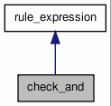

check_and Class Reference
The following classes are implementations of different constraints. More...
#include <dep_rules.h>
Inheritance diagram for check_and:

Collaboration diagram for check_and:

Public Member Functions | |
| void | add (rule_expression *) |
| check_and | |
| bool | check (dep_tree::iterator, dep_tree::iterator) const |
| Check wheter a rule_expression can be applied to the given pair of nodes. | |
Private Attributes | |
| std::list< rule_expression * > | check_list |
Detailed Description
The following classes are implementations of different constraints.
check_and: and of basic constraints check_not: negation check_side: side (left/rigth) of descendant wrt ancestor check_lemma: check if lemma of given node is in list of lemmas (separator character is |) check_category: check PoS category of given node check_wordclass: check if lemma of given node belongs to a word class check_tonto: Check if given node has a top ontology property And of basic contraints
Member Function Documentation
| void check_and::add | ( | rule_expression * | re | ) |
References check_list.
| bool check_and::check | ( | dep_tree::iterator | ancestor, | |
| dep_tree::iterator | descendant | |||
| ) | const [virtual] |
Check wheter a rule_expression can be applied to the given pair of nodes.
Reimplemented from rule_expression.
References check_list, and TRACE.
Member Data Documentation
std::list<rule_expression *> check_and::check_list [private] |
The documentation for this class was generated from the following files: